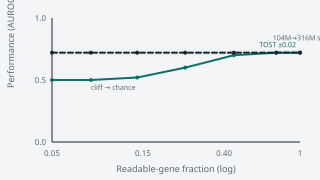
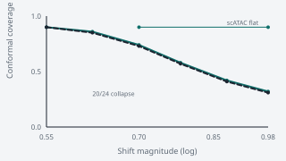
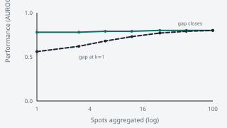

WHYCONTEXT
Circularity
Agreement scores can reward the label-generating process instead of representation quality. Pair every agreement metric with a circularity-free re-check, then convert the apparent rank into a dose–response.
A leakage-controlled, calibration-aware evaluation protocol for frozen foundation-model embeddings, stress-tested on single-cell genomics — an audit in place of a leaderboard.
displayed in Monocells
WHYCONTEXT
Agreement scores can reward the label-generating process instead of representation quality. Pair every agreement metric with a circularity-free re-check, then convert the apparent rank into a dose–response.
WHYCOVERAGE
A pretrained tokenizer reads only the genes in its vocabulary. An atlas can score coverage while appearing to score representation.
WHYSHIFT
Split-conformal coverage and calibration are only valid under exchangeability, which cross-batch and donor annotation violate.
F1FINDING
On vocabulary-matched atlases, frozen scFMs neither beat nor trail PCA, HVG, or scVI. Pair the claim with the vocabulary dose, not a leaderboard cell.
F2FINDING
Cross-batch calibration collapse is a general exchangeability failure, not an FM defect (20/24 atlases; scATAC is flat).
F3FINDING
Who wins is set by task and metric, not scale or architecture (Geneformer 104M→316M buys nothing).
P.iMOVE
Pair every agreement metric with a non-linear probe and a reference-free structure metric.
P.iiMOVE
Treat tokenizer and vocabulary coverage as a measured variable, not an assumed constant.
P.iiiMOVE
Argue parity by TOST (±0.02 AUROC), not by an absent p-value.
P.ivMOVE
Score split-conformal coverage, ECE calibration, and selective abstention under the deployment shift.
Whenever you would report a rank, find the dose that produces it, put the criticized method class on the same curve, and report the mechanism.
D.vocabDOSE

criticized class · baseline
D.batchDOSE

criticized class · baseline
D.spatialDOSE
Protocol mechanism cell: smooth over k neighbours. Not finding 3.

criticized class · baseline